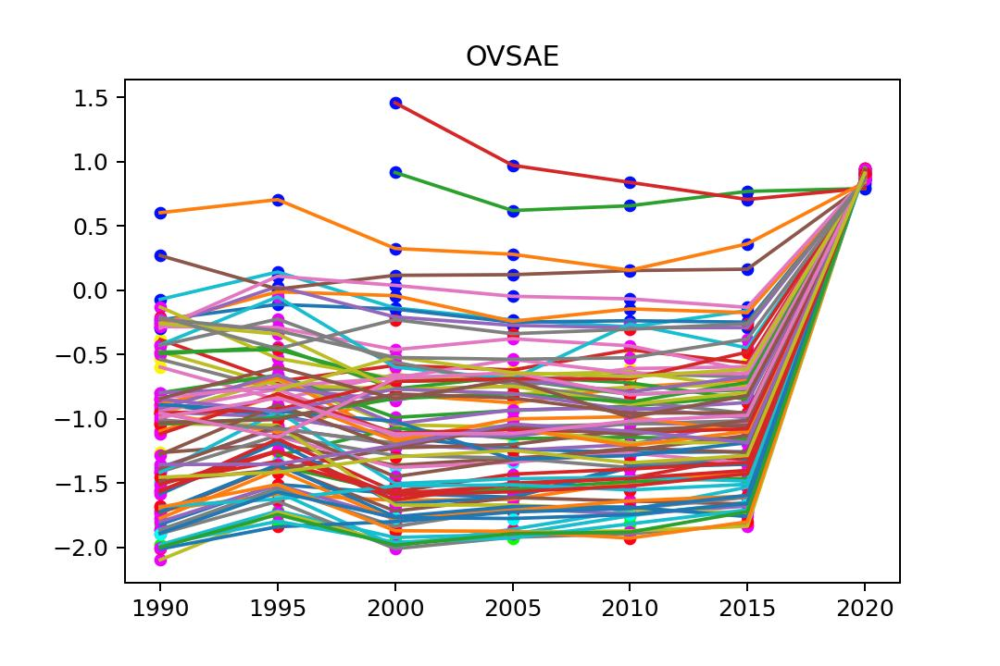
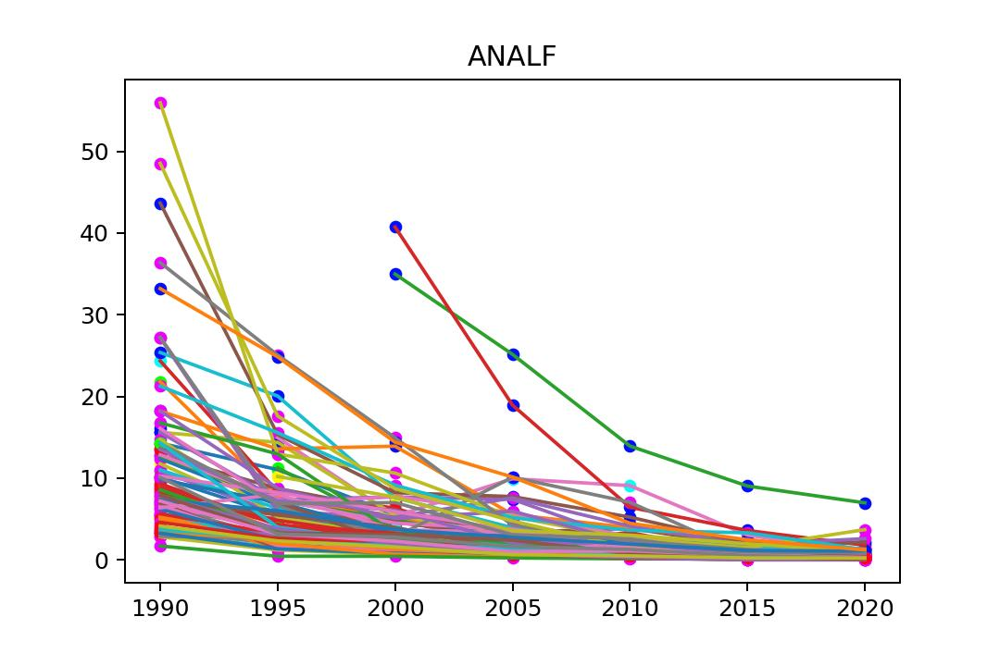
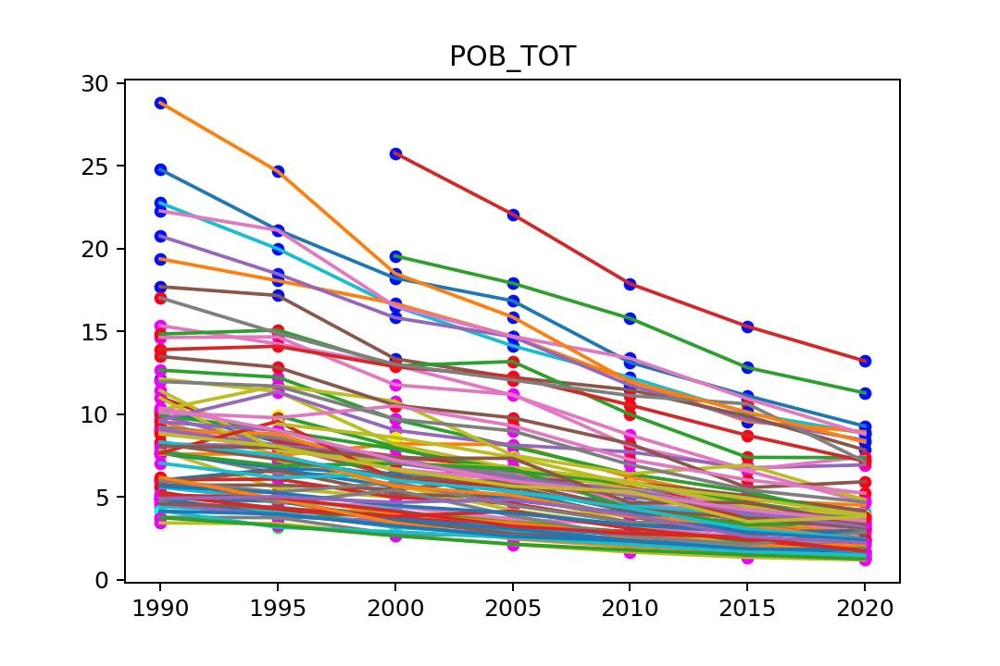
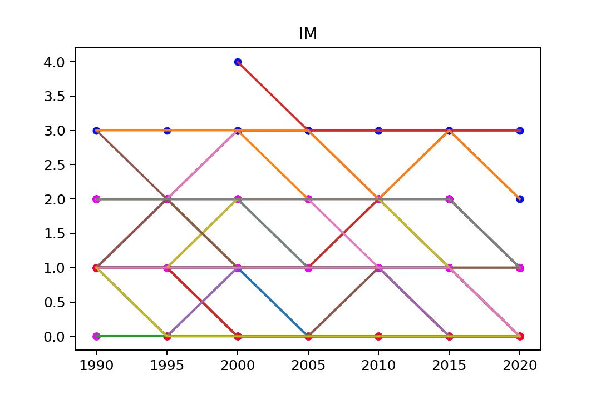
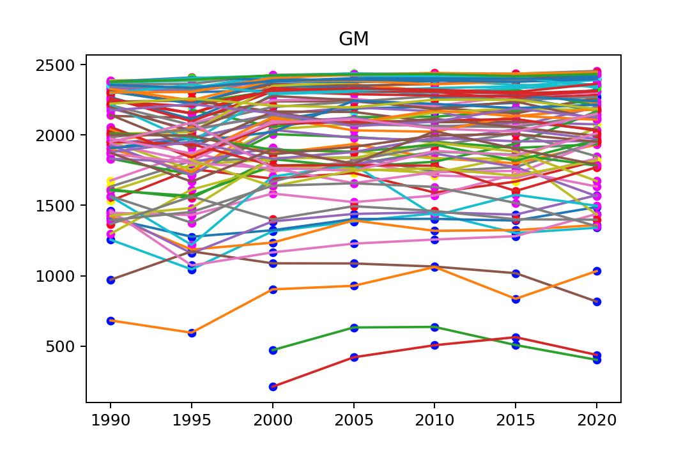
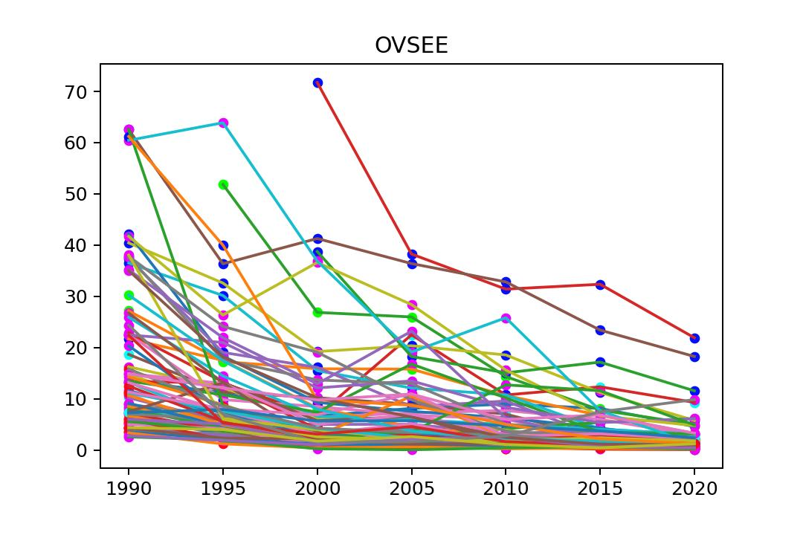
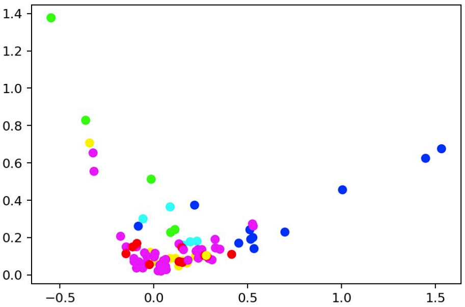
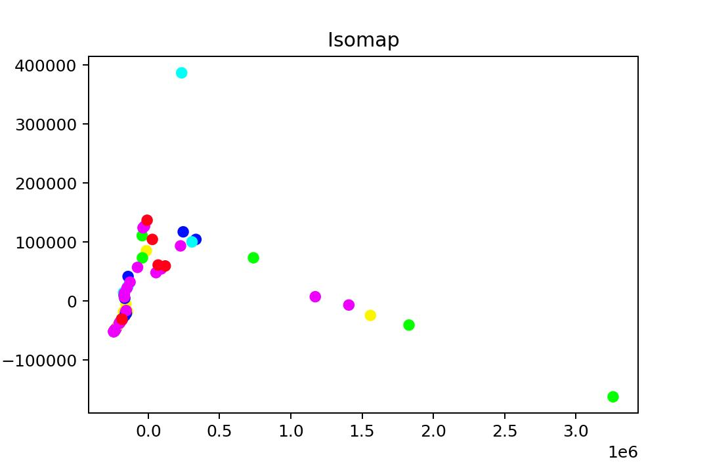
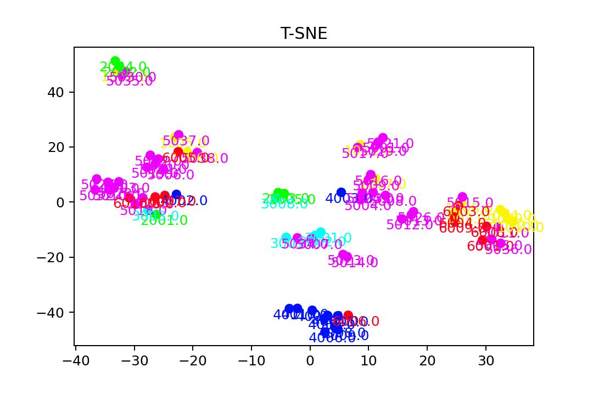
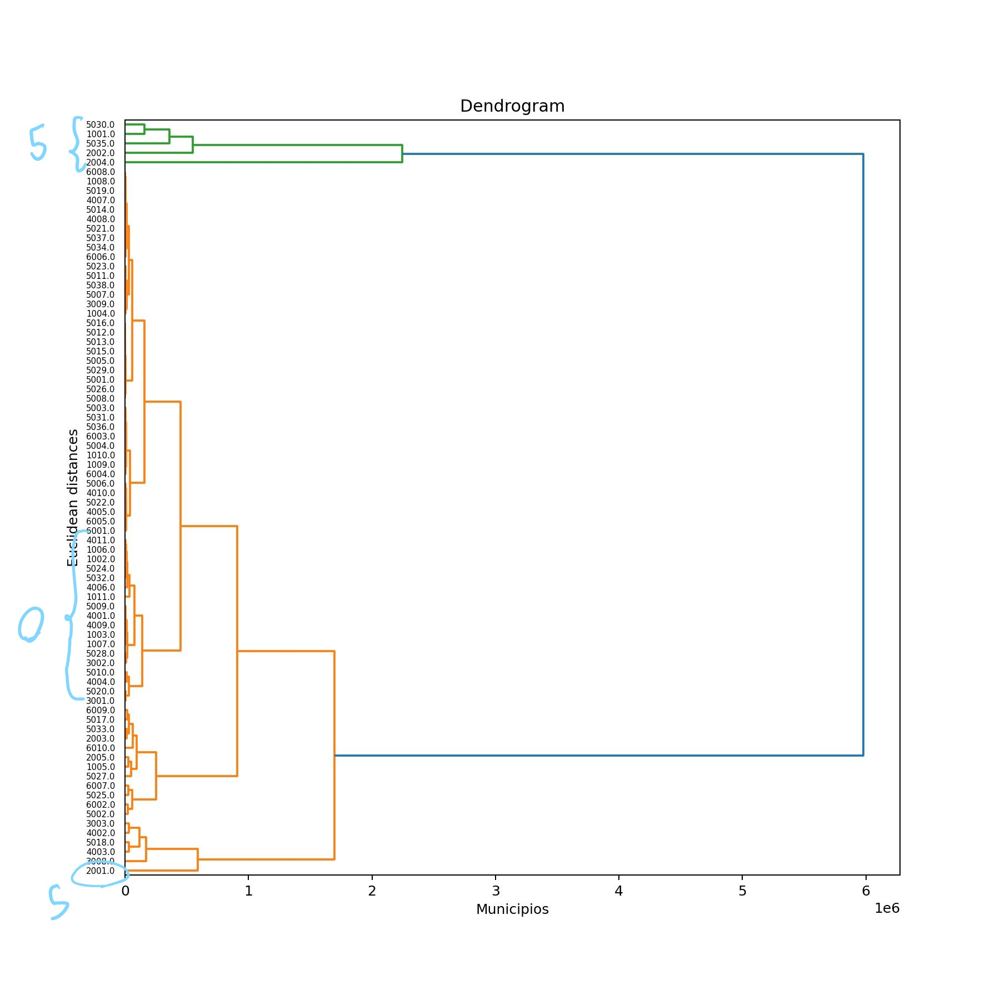

Karlo Guevara
Karlo Guevara
Reconocimiento estadístico
de patrone
Este trabajo consistió en realizar una exploración de indicadores de pobreza a nivel municipal utilizando datos del 2020 y datos del 2015 como comparación. A lo largo del trabajo se utilizaron herramientas como T-SNE, SOM, clustering jerárquico y otras más.
Inicié con una limpieza de datos, identificando los municipios con menos pérdida de datos y los tipos de datos que tenían menos información faltante. Por lo tanto, decidí enfocarme en ellos. También noté que podía trabajar con los datos como una serie de tiempo (visualizando los datos como una serie de tiempo).
|  |  |  |
|  |  |  |
Hacemos una proyección sobre las dos componentes principales (PCA) de nuestros datos para obtener una primera visualización de los mismos.

Después de analizar los resultados, aplicaremos ISOMAP a nuestros datos para obtener otra perspectiva de ellos. Al hacerlo con n = 2, obtenemos la siguiente imagen.

Continuamos aplicando T-SNE a nuestros datos con 2 componentes para empezar a trabajar en la separación de nuestros datos como un conjunto.

Continuamos aplicando Clustering Jerárquico para obtener una mejor separación de los conjuntos de datos que tenemos.

El trabajo completo se encuentra en el siguiente PDF , donde se interpreta con mayor profundidad cada uno de los resultados de los modelos utilizados, así como la aplicación de otras herramientas y modelos para el análisis de datos para llegar a un mejor entendimiento de nuestros datos.